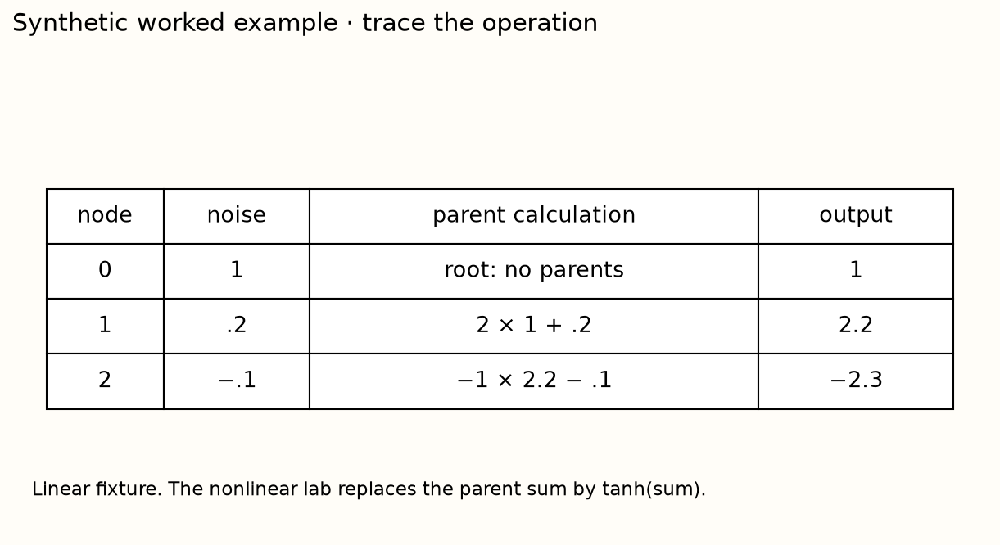

What a synthetic causal prior encodes
A computation and evidence reference
Core distinction
No, the synthetic prior is an assumption over tasks, not an identification result.
Implementation contract
| Operator | Required behavior |
|---|---|
sample_scm | Evaluate the upper-triangular DAG in topological order; use computed parents, not raw parent noise. |
observe_scm | Build observed X and binary y with a fixed threshold; reject target inclusion or repeated feature nodes. |

Measured evidence and limit
Removing the selected edge leaves both ancestors exactly unchanged. Mean absolute changes at nodes 2 and 3 are 0.4604 and 0.4607, respectively, on the paired synthetic samples. This isolates the implemented mechanism; it does not identify a real table's causal graph.
Before making a claim
- Identify source, model/checkpoint and data versions.
- Trace which labels enter each computation.
- State what is fixed, varied and measured.
- Use the right uncertainty and aggregation unit.
- Name the unrun comparison and a falsifying experiment.
Primary reading: TabPFN v1 prior. Exact regeneration contract.